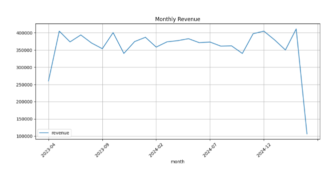
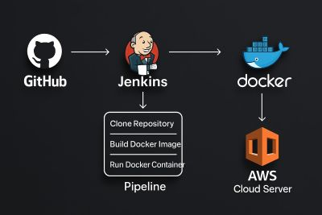
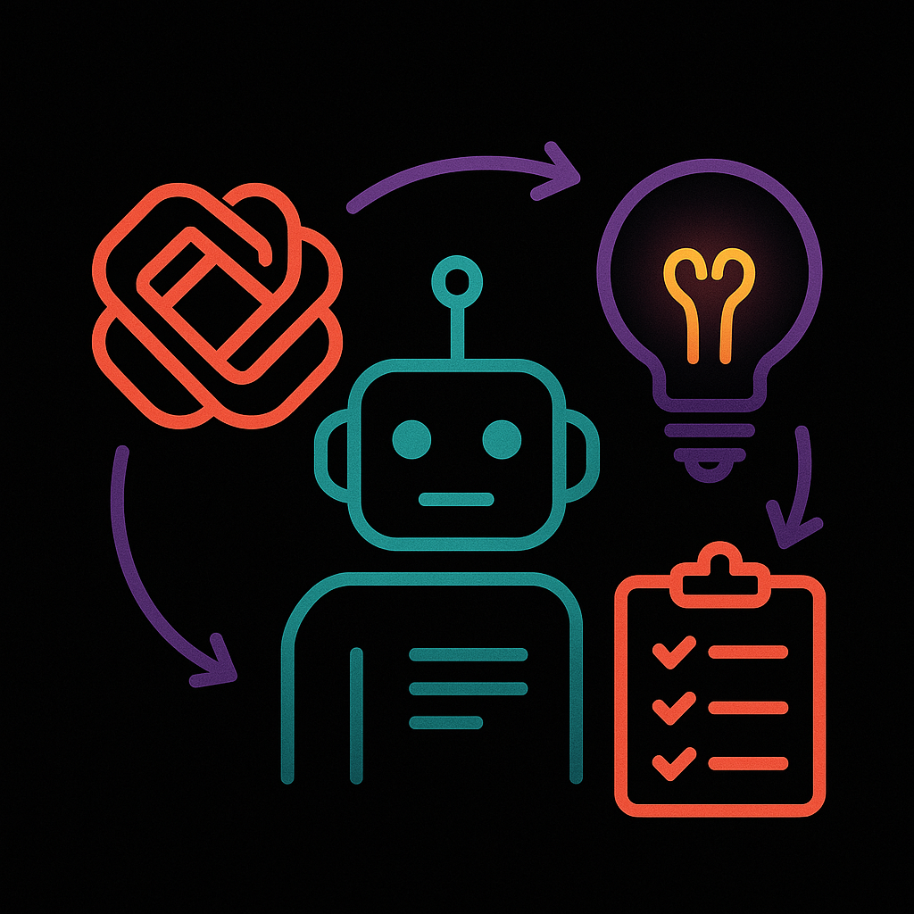
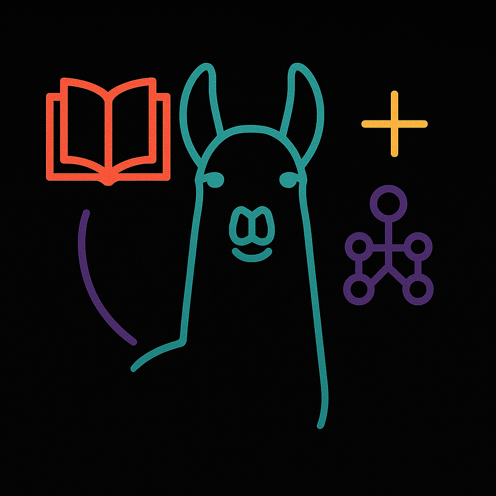
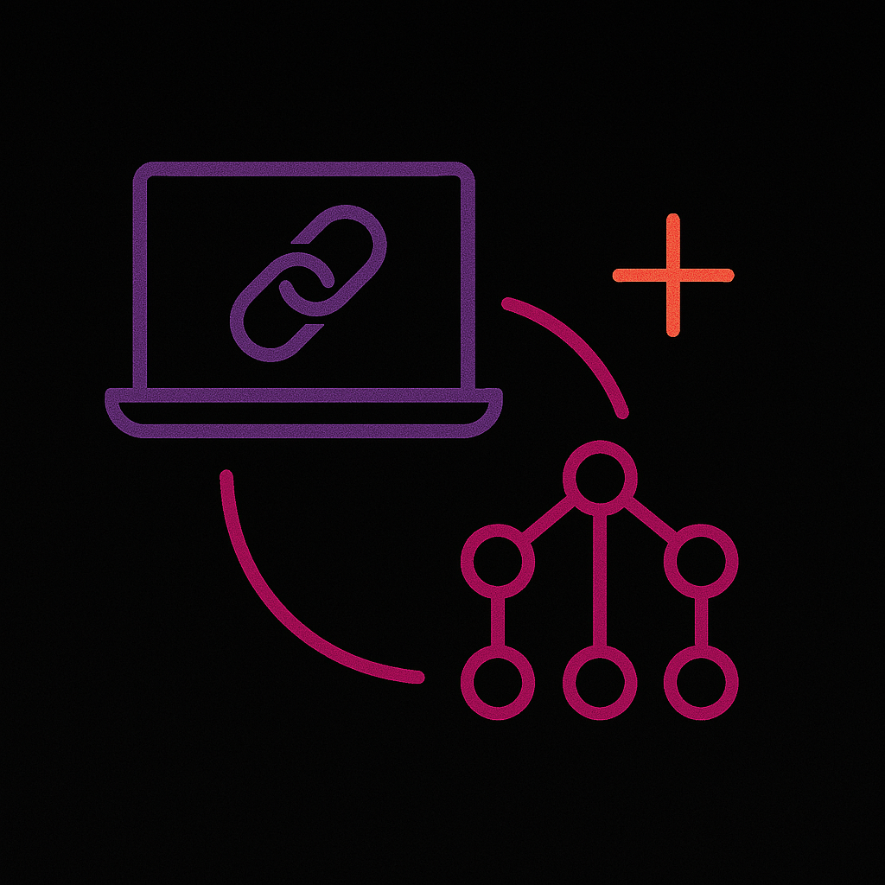
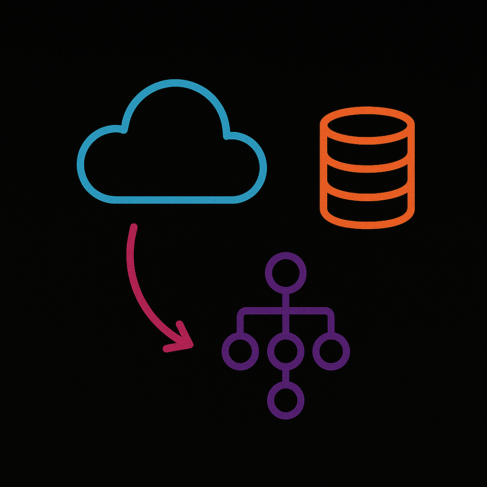

Data Visualization
Seaborn + Python

Smart Service Booking Portal
PHP + Bootstrap + Ajax + MySQL

E-commerce Data Exploration
SQL + Python

View GitHubCI/CD Pipeline
Docker + Jenkins + AWS

View Full CodeSeaborn + Python
PHP + Bootstrap + Ajax + MySQL
SQL + Python

View GitHubDocker + Jenkins + AWS

View Full Code
I’m constantly exploring AI agents that act like autonomous workers. Tools like Auto-GPT and CrewAI can break down goals, decide what steps to take, and execute them with minimal human intervention. The future I see is filled with AI sidekicks that take tasks off our plates and make work smarter — not just faster.

The open-source LLM movement excites me. Meta’s LLaMA, Mistral, and similar models let developers tinker, optimize, and deploy on their own terms. No API limits. No locked ecosystems. Just raw, customizable intelligence that levels the playing field for indie devs and small teams.

LangChain changed how I build AI pipelines. When paired with vector databases like Pinecone or ChromaDB, I can retrieve context-specific information and feed it into my models — creating AI that remembers, adapts, and understands more deeply. RAG systems make apps feel dynamic and smart, not just generative.

My passion isn’t just learning AI — it’s about building with it. From backend logic in Flask to front-end magic in JavaScript, I integrate models into web apps that do real work. Whether it’s a chatbot, a custom tool, or a dashboard, I love taking ideas and pushing them all the way to something functional, polished, and usable.